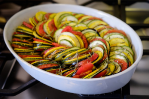

This colorful Provençal vegetable ragout is traditionally made with simple, easily accessible ingredients: courgettes, eggplants, green and red peppers, tomatoes, onions, garlic, and parsley. The name ratatouille stems from the old Occitan word ratatolha, and the French word touiller, both meaning to toss, or to stir up, referring to the cooking process in which the ingredients are first simmered separately, seasoned with salt, pepper, and olive oil and then tossed together and stirred into a vibrant vegetable medley.